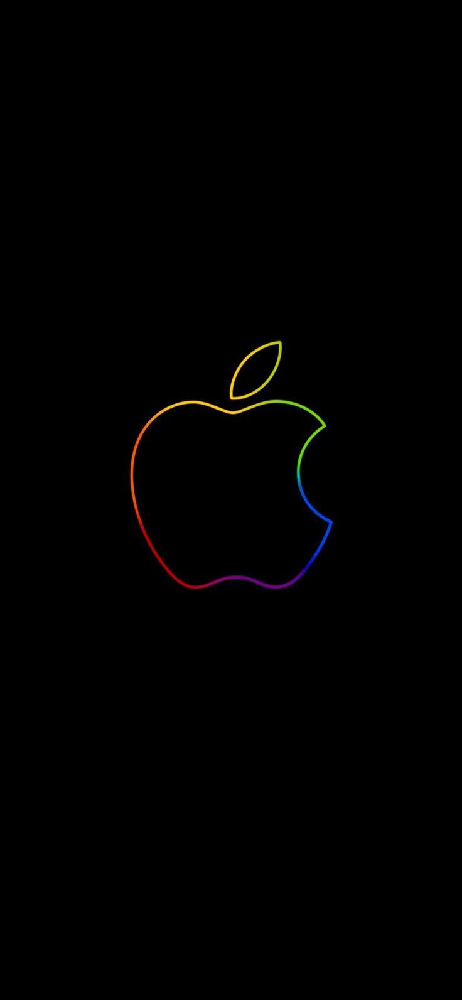

This is revolution, Johny!
Competition From IBM
Apple’s profits and size grew at a historic rate: by 1980 the company netted over $100 million and had more than 1,000 employees. Its public offering in December was the biggest since 1956, when the Ford Motor Company had gone public. (Indeed, by the end of 1980, Apple’s valuation of nearly $2 billion was greater than Ford’s.) However, Apple would soon face competition from the computer industry’s leading player, International Business Machines Corporation. IBM had waited for the personal computer market to grow before introducing its own line of personal computers, the IBM PC, in 1981. IBM broke with its tradition of using only proprietary hardware components and software and built a machine from readily available components, including the Intel microprocessor, and used DOS (disk operating system) from the Microsoft Corporation. Because other manufacturers could use the same hardware components that IBM used, as well as license DOS from Microsoft, new software developers could count on a wide IBM PC-compatible market for their software. Soon the new system had its own killer app: the Lotus 1-2-3 spreadsheet, which won an instant constituency in the business community—a market that the Apple II had failed to penetrate.
